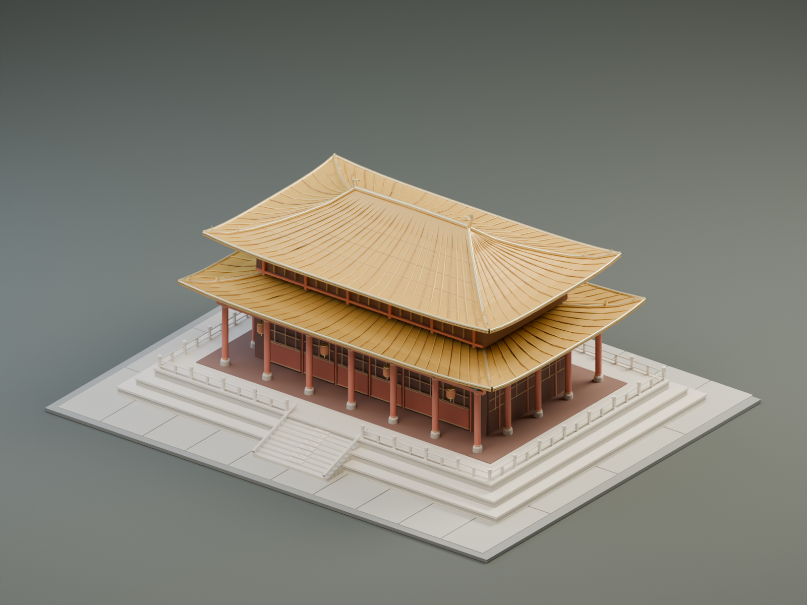

<!doctype html>
<html lang="zh-CN">
<meta charset="utf-8">
<meta name="viewport" content="width=device-width,initial-scale=1">
<title>重檐 · Three-Live 古建筑实验</title>
<style>
  *{box-sizing:border-box}body{margin:0;color:#eee7d8;background:#171b1b;font:15px/1.7 -apple-system,BlinkMacSystemFont,sans-serif}main{max-width:1440px;margin:auto;padding:30px 4vw}header{display:flex;justify-content:space-between;gap:20px;align-items:center}h1{font-family:serif;font-size:36px;font-weight:500;margin:5px 0}p{color:#b4b9b3;margin:6px 0}.eyebrow{font-size:11px;letter-spacing:3px;color:#d3af6b}nav{display:flex;gap:10px;flex-wrap:wrap}a,button{font:inherit;color:#f4ead8;border:1px solid #626358;background:#29302b;padding:8px 15px;text-decoration:none;border-radius:3px;cursor:pointer}a:hover,button:hover{border-color:#d3af6b}three-live{display:block;width:100%;height:69vh;min-height:420px;margin-top:24px;background:#232927;border:1px solid #3c443d;border-radius:6px}footer{display:flex;gap:24px;justify-content:space-between;margin-top:15px;font-size:13px}#status{color:#cfb57d}details{margin-top:24px;color:#b4b9b3}details a{display:inline-block;margin:10px 8px 0 0}#ar img{display:none}@media(max-width:700px){header,footer{display:block}nav{margin-top:18px}three-live{height:60vh;min-height:360px}h1{font-size:30px}}
</style>
<main>
  <header><div><div class="eyebrow">THREE-LIVE · APPLE SILICON STUDY</div><h1>重檐 · 中国古建筑</h1><p>太和殿风格创作：重檐庑殿、琉璃瓦、斗拱与汉白玉台基</p></div>
  <nav><a href="artifacts/palace.glb" download>下载 GLB</a><a href="artifacts/palace.usdz" download>下载 USDZ</a><a id="ar" rel="ar" href="artifacts/palace.usdz">Apple AR 预览</a></nav></header>
  <three-live id="viewer" src="artifacts/palace.glb" ios-src="artifacts/palace.usdz" camera-controls ar allow-client-scripts camera-orbit="35deg 28deg 1.7m" camera-target="0 0 0" min-camera-orbit="auto 0deg 0.25m" max-camera-orbit="auto 85deg 4m" tone-mapping="aces" exposure="1.1" shadow-intensity="0.65"></three-live>
  <footer><span id="status">正在载入官方编译器生成的 GLB…</span><span>拖动旋转 · 滚动或双指缩放 · 底部为地面原点</span></footer>
  <details><summary>模型与实验记录</summary><p>模型为参数化建筑创作，不是文物测绘复原。模型及 Three-Live 运行库均从本机加载。</p><p id="stats"></p><nav><a href="scenes/palace.js" download>场景源代码</a><a href="artifacts/validation.json">编译与校验记录</a><a href="artifacts/glb-validation.json">GLB 检查</a><a href="artifacts/realitykit-validation.json">RealityKit 检查</a><a href="docs/three-live-apple-pipeline.md">管线研究</a><button id="compile">用相同源码在浏览器重新编译</button></nav></details>
</main>
<script type="module">
  const viewer=document.querySelector('#viewer'),status=document.querySelector('#status');
  viewer.addEventListener('load',()=>{status.textContent='模型已载入 · Google Three-Live v1.2.3';window.modelLoaded=true});
  viewer.addEventListener('error',e=>{status.textContent='载入失败：'+(e.detail?.error?.message||e.detail?.error||'未知错误');window.modelError=status.textContent});
  import('./tools/web/three-live-full.min.js').then(()=>{customElements.get('three-live').sandboxEngineSrc=new URL('./tools/web/three-live-full.min.js',location.href).href}).catch(e=>{status.textContent='运行库未安装，请先运行 python3 scripts/setup.py';window.modelError=e.message});
  fetch('artifacts/glb-validation.json').then(r=>r.json()).then(d=>{document.querySelector('#stats').textContent=`${d.meshes} 个材质网格 · ${d.vertices.toLocaleString()} 顶点 · ${d.triangles.toLocaleString()} 三角形 · GLB ${(d.bytes/1048576).toFixed(2)} MiB`});
  document.querySelector('#compile').onclick=async()=>{status.textContent='正在浏览器沙箱重新编译…';try{const source=await(await fetch('scenes/palace.js')).text();await viewer.executeScript(source)}catch(e){status.textContent='编译失败：'+e.message}};
</script>
</html>
